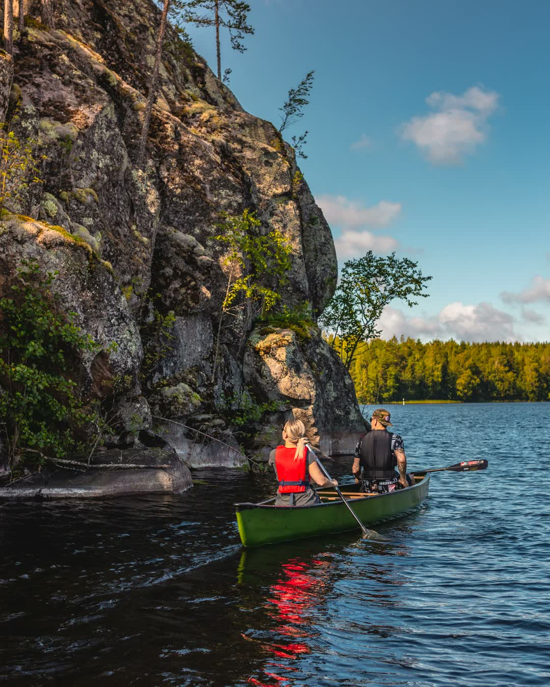
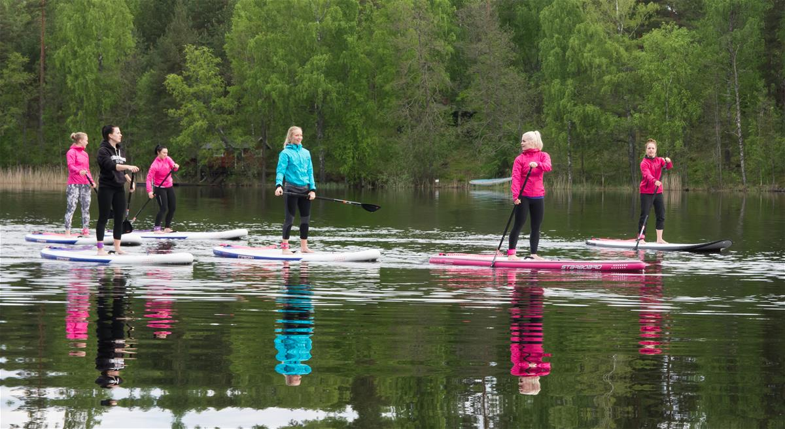

Järvisydän Resort
The Heart of Lake Saimaa
The Heart of Lake Saimaa

Linnansaari National Park begins just 1 km from Järvisydän — take the boat from our pier and you are inside the park. A pristine archipelago of forested islands, hidden coves, and crystal-clear waters.
Boat excursions depart directly from the resort — guided tours and private cruises through the Saimaa waterway archipelago.
Saimaa Ringed Seal — one of the world's rarest seals, with only ~450 individuals. Our guided seal safaris offer a unique chance to observe them in their natural habitat.
Island experiences: Hiking trails, campfire lunch on a private island, and kayak excursions through the archipelago.
May — September on Lake Saimaa






Thank you.
Finland DMC is a specialist destination management company covering all of Finland. We craft seamless, end-to-end travel experiences for international tour operators — accommodation, dining, activities, and transfers, all in one package.
Järvisydän is our flagship Lakeland partner. We know every room, every trail, every dish — and we bring it all together for your clients.